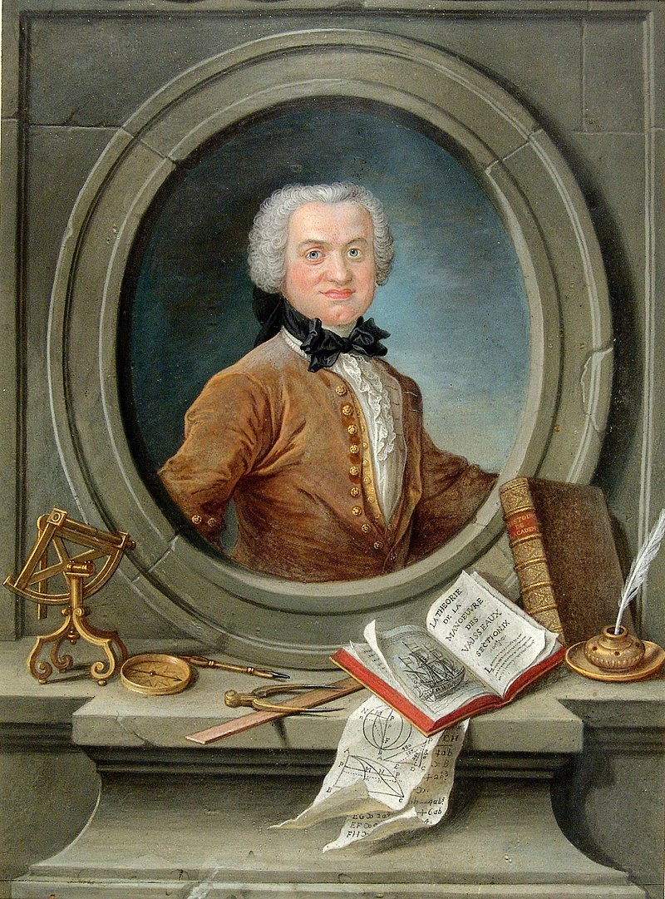

Henri Pitot | |
|---|---|
|  Henri Pitot | |
| Rođen | 3 Svibnja 1695 |
| Umro | 27 Prosinac 1771 |
| Nacionalnost | Francuska |
| Poznat još za | Pitotova cijev |
| Znanstvena karijera | |
| Polja | Hidraulika |
U geometriji, Pitotov teorem, nazvan po francuskom inženjeru Henriju Pitotu, kaže da su u tangencijalnom četverokutu (tj. onom u koji se može upisati krug) dva zbroja duljina suprotnih strana jednaka. Obje sume duljina jednake su poluperimetru četverokuta,
Teorem je logična posljedica činjenice da dva tangentna odsječka iz točke izvan kružnice u kružnicu imaju jednake duljine. Postoje četiri jednaka para tangentnih segmenata, a oba zbroja dviju strana mogu se rastaviti u zbrojeve ove četiri duljine tangentnih segmenata. Točna je i obrnuta implikacija: kružnica se može upisati u svaki konveksni četverokut u kojem su duljine suprotnih strana jednake vrijednosti.[2]
Henri Pitot je dokazao svoj teorem 1725. godine, dok je obrnuto dokazao švicarski matematičar Jakob Steiner 1846. godine.
Pitotov teorem generalizira na tangencijalne 2n-kute, u kojem su slučaju dva zbroja alternativnih strana jednaka.
Dokaz ovog teorema se najlakše može vidjeti na primjeru kvadrata
Kvadratu upisana kružnica se uvijek dodiruje u polovištima stranica
{kind=link}